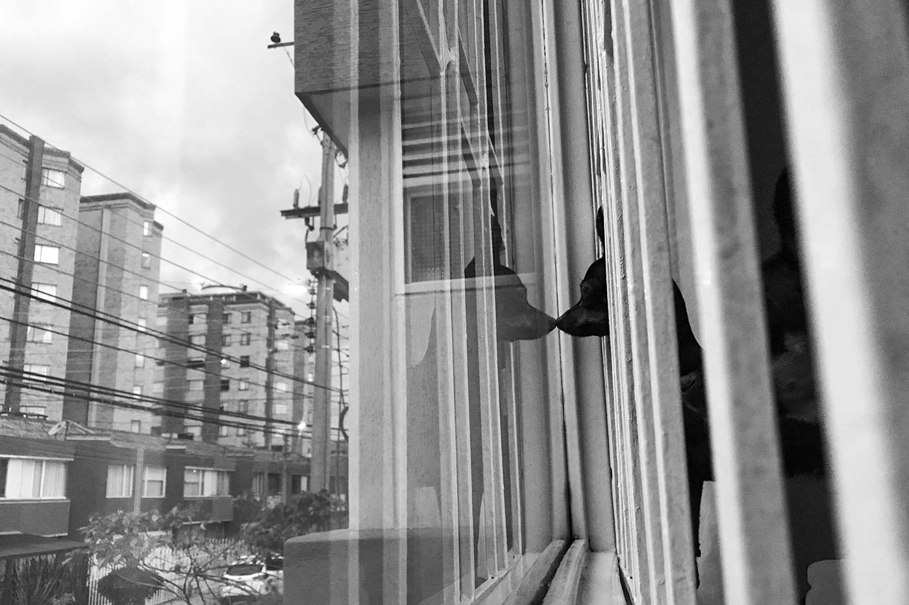
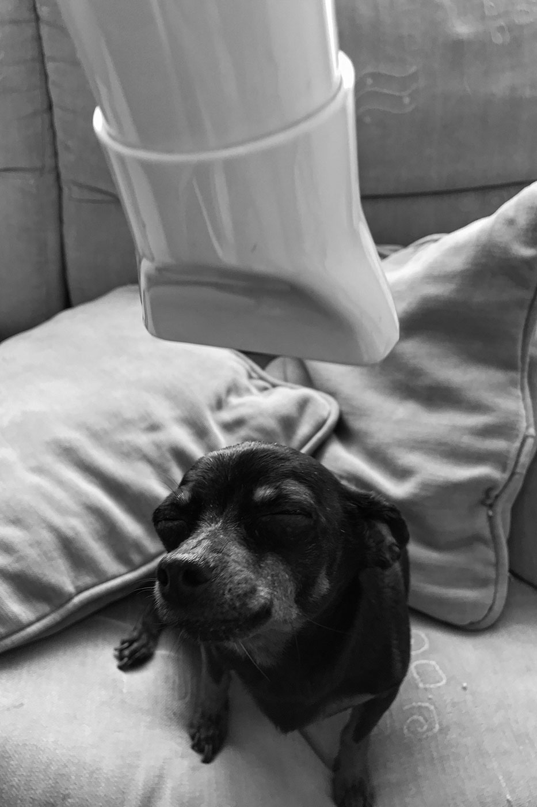
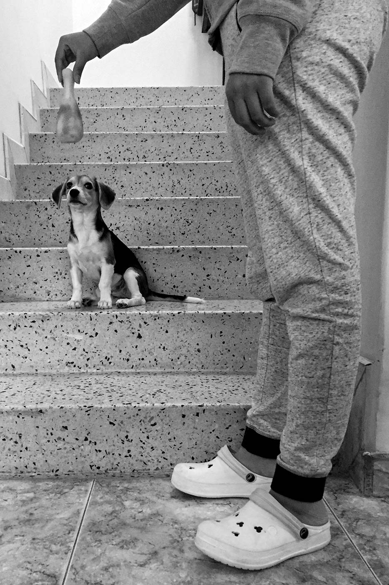
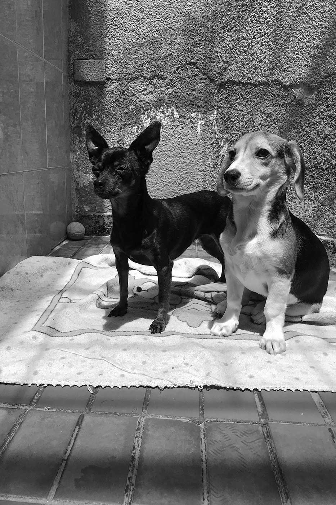

IF
Fabio, Marcela, Tatiana y Alejandra son los miembros de la familia Naranjo Acosta quienes viven en Duitama, Boyacá. Sasha, Cloe y Ayka son sus mascotas. Sasha llego a esta familia hace 9 años como un regalo que Fabio y Marcela (los padres) le quisieron dar a Tatiana y Alejandra (sus hijas) luego de la muerte de su hámster “Lulú”. Cloe es la hija de Sasha y hace parte de esta familia desde hace 4 años; Finalmente Ayka es parte de esta familia desde hace 4 meses porque Tatiana les pidió permiso a sus papas para adoptarla, porque vio en redes sociales que la fundación de “el ángel de los perros” publicara que habían encontrado 5 perros en una caja que estaba dentro de un costal cerca a la carrilera del tren que pasa por Duitama.
Esta familia al igual que sus mascotas han tenido que cambiar radicalmente su rutina diaria a causa de la pandemia del covid-19 y de la cuarentena nacional obligatoria que se está viviendo en Colombia. En su ciudad (Duitama) la cuarentena se está viviendo con mucho más rigor. Boyacá entro en cuarentena desde el 21 de marzo (3 días antes de que el resto del país lo hiciera) y desde ese día cerro todas sus fronteras. Duitama hizo exactamente lo mismo, pero además estableció el toque de queda las 24 horas del día e implanto la medida del “pico y cedula”, para que solo pudiera salir una persona por núcleo familiar a suplir sus necesidades durante 2 o 3 días a la semana teniendo aproximadamente 3 horas al día para salir. Las personas de áreas de la salud, de seguridad, de las fuerzas armadas, del transporte de alimentos y productos de primera necesidad, de restaurantes, de las empresas de domicilios, de droguerías o de supermercados, entre otros sectores, son los únicos autorizados para salir las calles y poder movilizarse a sus lugares de trabajo y luego a sus viviendas cumpliendo con estrictos protocolos de seguridad. Es por esto que Tatiana y Alejandra, al igual que todos los jóvenes y niños del país, pasaron de ir todos los días a la universidad y al colegio (respectivamente) a tener clases virtuales en casa. Fabio quien trabaja con el transporte de carga pesada, estaba acostumbrado a viajar durante algunas semanas por todo el país y ha tenido que reducir el número de viajes a los que estaba acostumbrado a uno por semana, a lugares cercanos a Duitama, y Marcela tuvo que dejar de hacer los trámites y las cosas de la microempresa de carga fuera de casa y pasar a visualizar la empresa.
Pero ellos no fueron los únicos que cambiaron su rutina, Sacha, Cloe y Ayka también tuvieron que hacerlo. Estas 3 mascotas estaban acostumbradas a salir dos o tres veces al día a pasear a pie, a jugar en el parque, a ir al veterinario o simplemente a salir en el carro con la familia a cualquier lugar (dicen sus dueños que son amantes de los paseos en automóvil, especialmente con la ventana abajo) y ahora deben estar todo el día en casa porque sus dueños además de no contar con el tiempo suficiente para salir a pasearlas y hacer las compras, también tienen miedo de salir a la calle y ser sancionados por no cumplir la cuarentena o por el alto riesgo de contagio.
Es por esto que la familia hizo todo lo posible para que sus mascotas no extrañaran ninguna de las cosas que acostumbraban a hacer antes. Ahora, a cambio de las salidas a caminar, al jardín de la casa o a jugar en el parque tienen en el patio de la casa una cobija y un tapete en el piso para que tomen el sol juntas, casi siempre a medio día o en la tarde, o para que se acuesten allí a descansar. Allí también juegan en algunas ocasiones con Tatiana y Alejandra, aunque también juegan dentro de la casa. Las salidas rutinarias a la veterinaria también tuvieron que cancelarse (las veterinarias están abriendo solo para urgencias y venta de productos), por lo que la familia ha tenido que duchar y asear a sus mascotas desde casa. Además, tuvieron que colocar un sofá junto a una ventana para que Sasha, Cloe y Ayka pudieran ver ocasionalmente a las personas que pasan frente a la casa y así distraerse un rato. Este sofá se convirtió en su nueva cama, lugar de juegos y se podría decir que hasta en su propio balcón. La familia Naranjo Acosta dice que para ninguno de ellos ha sido fácil este cambio de vida tan repentino que han tenido que afrontar, pero que seguirán haciendo lo posible para que la cuarenta sea un poco más llevadera para ellos e incluso para sus 3 mascotas.